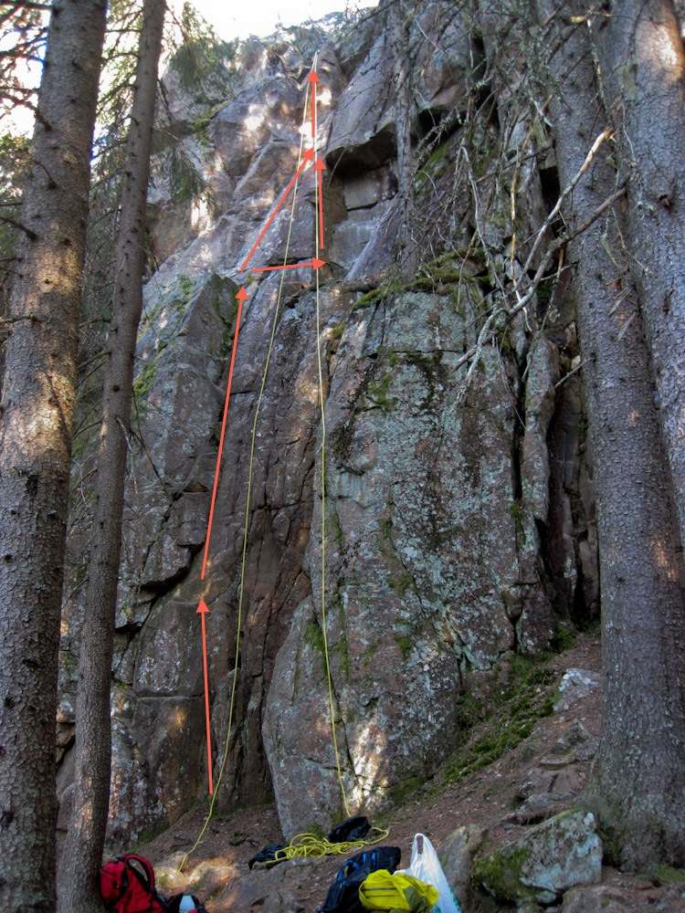
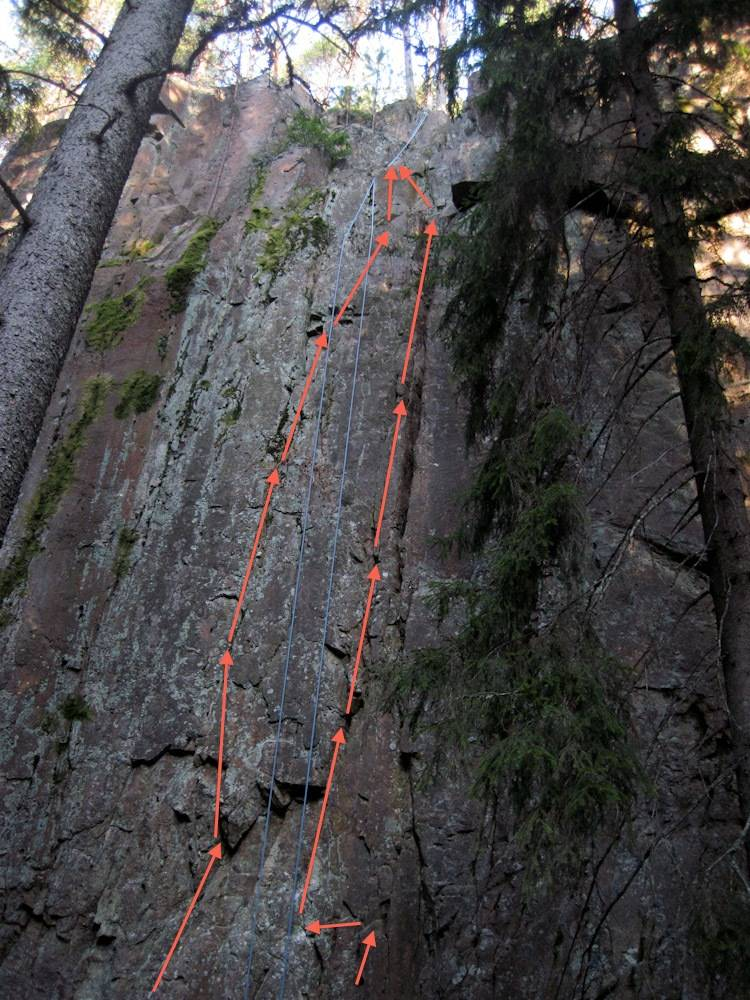

Ganska sällan klättrad klippa ca 1km från närmaste körbara väg. "Permanenta" toppsäkringar uppsatta av Vildmark i Värmland (Fasta installationer runt tallar på toppen av klippan). Klippan bjuder på ett antal leder i 5 och 6:a registret samt möjligheter till svårare väggklättring. Borstning av klippan behövs om man vill klättra några av de mer svaiga ledera medans de vertikala lederna är i princip körbara som de är. Klippan ligger i söderläge men pga relativt tät och närbevuxen granskog torkar den på vissa ställen långsamt. På vissa ställen på toppen av klippan ligger det några suspekta block som bör undvikas när man toppar ur.
Kör norrut från Kyrkan i Vitsand, vid fotbollsplanerna tag av höger. Följ grusvägen till ett stort grustag, parkera och följ stigen upp till Jotumhallarna, klippan finns på vänster sida efter cirka 1km.
Dessa leder har bara klättras på topprep och grader är därför topprepsgrad. Inga bult finns men tradklättring kan ju med fördel utövas av den vågade. Okänt om det finns några etablerade leder och/eller FAs.
Denna led håller runt 5b, kan klättras i två varianter i slutet varav vänsteralternativet är lite tunnare men svaigare.
Höger led följer sprickan upp och håller troligen runt 6b i grad. Vänster led är lite svårare, 6c (6c+?) och innehåller några lösa grepp i starten. Båda dessa leder är i princip vertikala och riktigt bra.
Kategori:trad
Kategori:sva
Kategori:vertikalt
kategori:Saknar skiss
kategori:Saknar skrivarformatering
Category:Värmland
Copyright (C) Permission is granted to copy, distribute and/or modify this document under the terms of the GNU Free Documentation License, Version 1.3